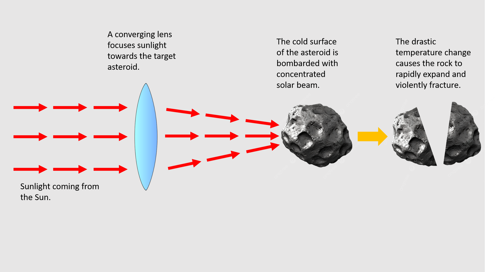

When the concentrated solar beam hits the freezing cold surface of the asteroid, the drastic temperature change causes the rock to rapidly expand and violently fracture.

This fracturing process is known as Thermal Spalling. Because heat doesn't travel well through porous asteroid rock, the very top layer gets incredibly hot while the rock just a few millimeters below remains freezing. This creates immense mechanical stress.
The rock simply pops and flakes away, layer by layer, turning the solid surface into gravel and dust. Crucially, as the rock fractures, the heat sublimates any trapped water ice inside the rock, instantly turning it into high-pressure steam that blasts out of the asteroid.